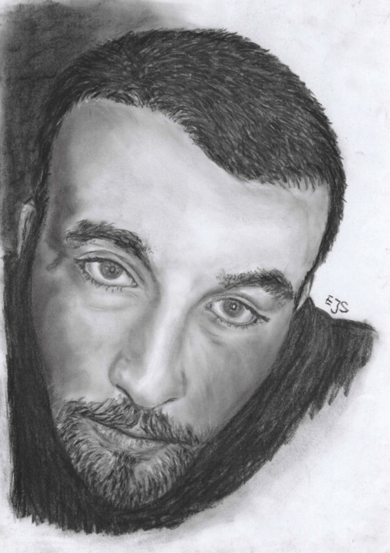

Marcin Strzelecki 

Summary
Ambitious and passionate IT generalist, cybersecurity enthusiast, web developer, software and embedded engineer focused on addressing accessibility and diversity problems, regulatory compliance, tech for good.
Goal oriented natural problem solver with great eye for detail. With over 10 years of engineering experience in automotive, aerospace and nuclear fusion industry, I have amassed a wealth of transferable skills and knowledge.
I ask challenging and difficult questions to change societal perception of reality.
I'm contributor. Changing policies, processes and practices not adjusted to diverse societal needs.
Seeking for opportunities to apply my proven strengths supporting I/NGOs, communities, charities and tech for good industries.
Education
-
IBM Skillsbuild, Remote — Front-End Web Dev, Sep 2023 - Nov 2023
-
IBM Skillsbuild, Remote — IT Support, Apr 2023 - May 2023
-
ZUT, Szczecin — BSc in CS, Not graduated, Oct 2003 - Oct 2005
Work experience and volunteering
-
UK Cyber Security Council, Remote — Volunteer
Nov 2023 - ongoing
- Mapping certifications KWoP to cyBOK KAs.
- Critical and analytical thinking, research.
-
South Devon Care Services, Ogwell — DC
Nov 2022 - Sep 2023
- Sabbatical - Focus on career change.
- Daily DC duties, empathetic interaction with residents and family.
-
Star Solutions Engineering, Abbotskerswell — Machine Operator
Apr 2022 - Nov 2022
- Ownership of company quality standards.
- Processing parts through finishing operation, packing and dispatch to customers.
- Visual and metrological post and in-production quality control, on-line and off-line CMM programming, instruments calibration.
-
MB Aerospace, Newton Abbot — CNC Operator-Inspector
Oct 2015 - Dec 2021
- Responsible for maintaining continuous production and quality control across a number of departments for clients such as Rolls-Royce, Safran, GE.
- Adding value by acting as the first point of contact for technical, administrative, paralegal and financial matters.
- Involved in all aspects of the business by providing improvement proposals in the field of automation, quality, asset management, H&S, HR, and delivering engineering and mentorship support company-wide.
-
WUZETEM, Warszawa — CNC Setter-Operator
Dec 2011 - Sep 2015
- Operating and setting various manual and CNC machines for leading manufacturer of fuel injection equipment. Including G - code programming, cell - specific production planning and quality control.
-
LOT Services, Warszawa — Ground Handling Operator
Jun 2011 - Dec 2011
- Providing safe transportation of crew, luggage, equipment and aircraft parking across Chopin Airport.
-
PZU, Warszawa — Debt Collection Consultant
May 2010 - Mar 2011
- Inbound and outbound over the phone consultations for market leading car insurance provider. Supporting both individuals and small fleet owners with repayment of arrears.
-
Temp Agency, York — Various
Nov 2005 - Apr 2010
- Diverse spectrum of roles for various clients including fabrication for Portakabin, repair of game consoles for Gamestation and admin with some translation work for AA (the charity).
Skills
-
Soft:
- Critical thinking
- Creative problem solving
- Active Listening
- Conceptualisation and ideation
- Research and analysis
- Team working
- Curiosity and learning
-
Technical:
- IT support: Hardware, software, network
- OS: Windows, Linux, Android
- Fundamentals of CyberSec and InfoSec
- Software / Web design and development
- Agile/ Scrum
- QA
- Coding: C/C++, Python, JS, HTML, CSS @ various levels
- Prototyping/ PoC
Certifications, recognitions
- IBM IT Support Specialist Certificate - 2023
- Recognised by HR for insight and involvement in the compliance of the redundancy process which resulted in cessation of legal liability - 2021
- Awarded for excellence in Customer Service - 2011
Reach out
Contact me;